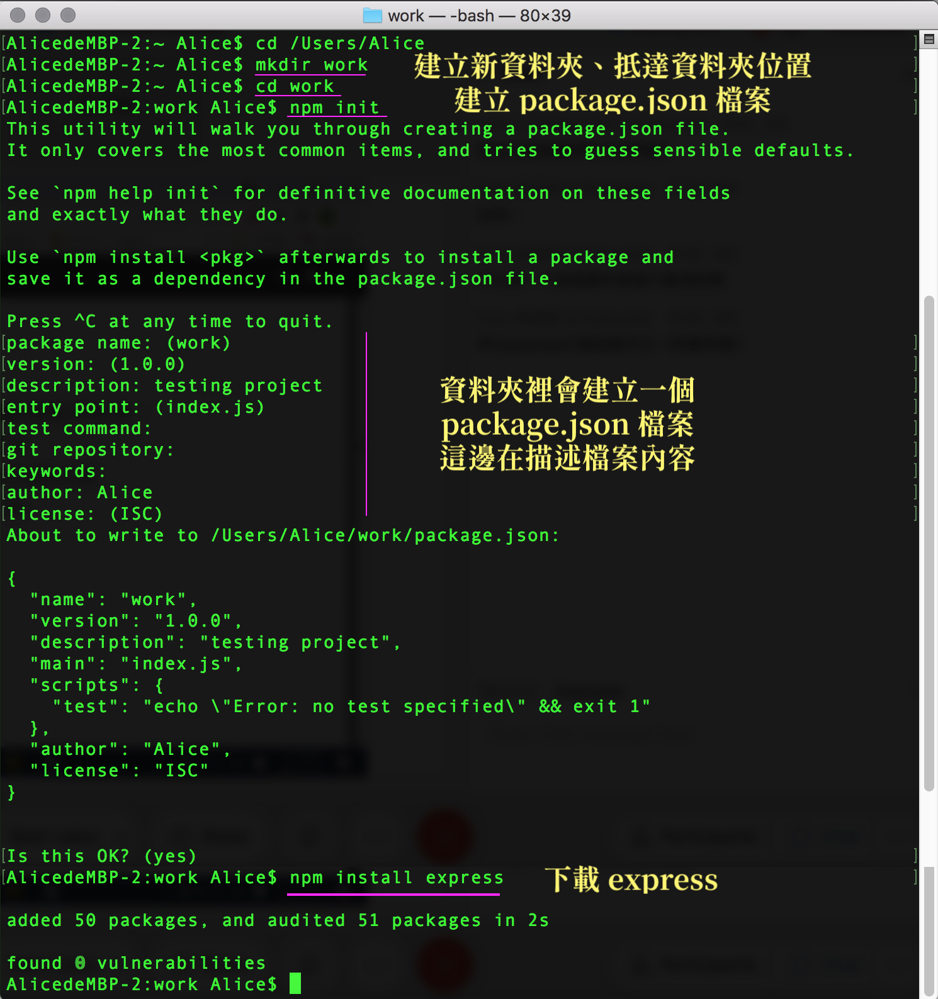
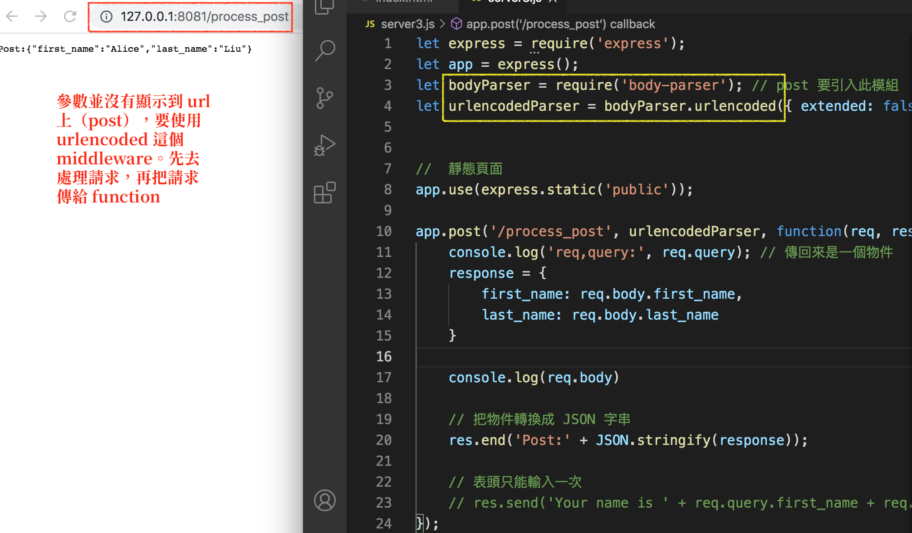

npm
- 查詢 npm 版本：npm -v
- 更新 npm 套件：npm install npm -g（全域安裝）
- 區域安裝套件 npm install 套件名稱：npm install express
2021/07/11 Web front-end development
我電腦實際 package.json 位置好深..。實際要下載 express 不太知道要下載到哪裡，老師的方式對我來說好像不管用（應該跟電腦是mac有關？）。找到了我可以使用的方式，這邊的方式可以成功下載：Express
（這時 work 這個資料夾內就會有幾個檔案生成了，是為套件內容）
Node.js Express 框架
靜態網站資料夾命名為 public 是大部分習慣的命名法，但也不一定要這樣使用。
不同路徑用 get 或 post 去撰寫。
以前對 表單的 get 與 post 總有點疑惑，是隨著時間過去一直有在學習，才開始比較理解它的用法與意思。今天的 express 寫到 get 、post 與 html 就可以很清楚了解他的概念了。
用後端 express 操控表單為 get 或 post 時，它會導向到什麼頁面或呈現什麼文字。
以下為描寫路徑的方法
格式化字串的輸出， %s 表示輸出字串，會從後方抓參數。 ('Listen at http://%s:%s', host, port) → 第一個 %s 就會抓 host，第二個 %s 就會抓 port。
老師說這是 C 語言的東西，但在這邊也可以應用。第一次遇到格式化字串輸出，還是蠻有趣的，而且感覺很好用！接著下面是 JSON 的寫法（get 時）
要用到 post 的話，中間要先經過一個 middleware 中介軟體（bodyParser.urlencoded），請求會先經過它，才跑後面的程式。
看到這篇 stack overflow 的問答，覺得下面有網友答的很好。
stack overflow : What are express.json() and express.urlencoded()?
這邊也一解我對於 { extended: false / true } 的疑問。 false 只能接受字串或陣列， true 能接收任何形式。以及回答者也回答：
下載 multer 語法：
express 中介軟體，也類似 function，不過會先執行中介軟體才執行其他程式碼。其中的 next() 很重要，若沒有加上 next()，程式碼就會停在裡面不會往下。若過濾網址的 get / post 在中介軟體之前，且符合過濾器則不會執行中介軟體，但若沒有符合過濾器，則會執行中介軟體。
幫助理解之文章：「筆記」- 何謂 Middleware？如何幫助我們建立 Express 的應用程式 、 Express : 撰寫中介軟體以用於 Express 應用程式中 、 [鐵人賽Day04] - 淺談Middleware
JADE 模板基本用法
express 產生器感覺蠻有趣的，jade 竟然還可以繼承跟（include）跟使用函數（mixin）。之後要找一天把以前做的網站拿出來用 express 產生器練習看看！看可不可以成功連線！
今天真的收穫滿滿！學到了好多，覺得很開心！比較後端的東西學起來也很有趣呢。找工作時看到 node.js、express，總是對這兩個東西不太熟悉，上了這堂課後終於可以好好地摸一摸他們了！即使下禮拜就要換學 React 了，沒有再繼續鑽研 express，但找到方向可以自學了，太棒了！（我對下禮拜 React 也是滿懷期待呢～）